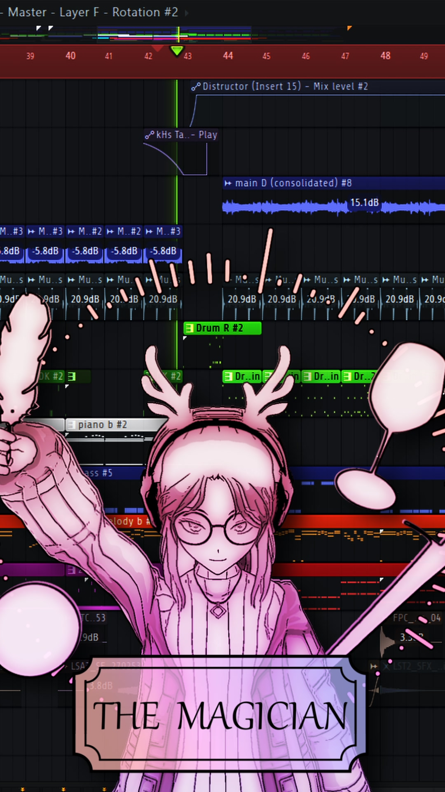
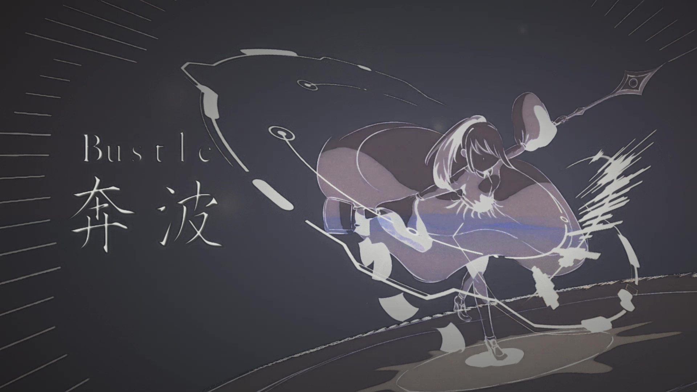
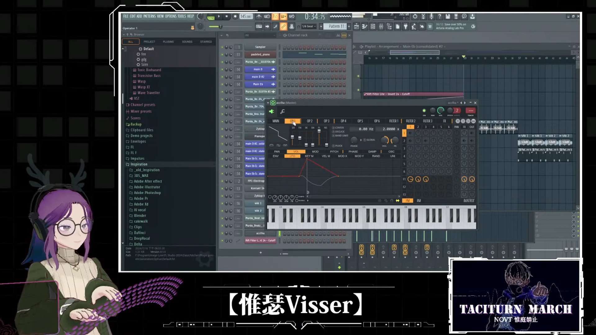
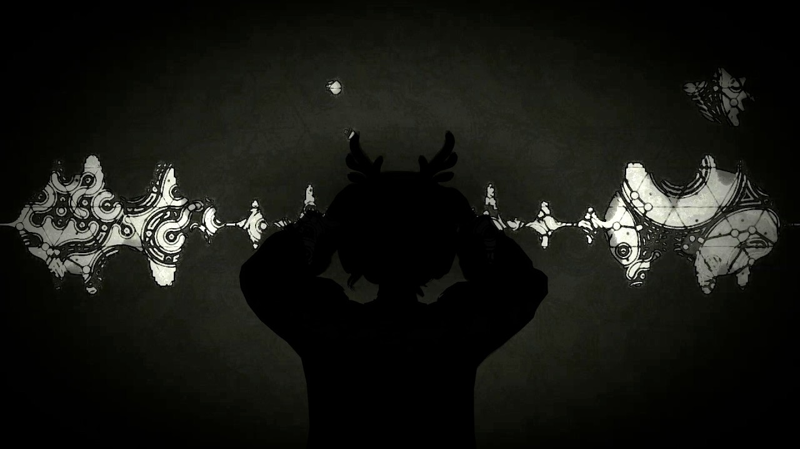
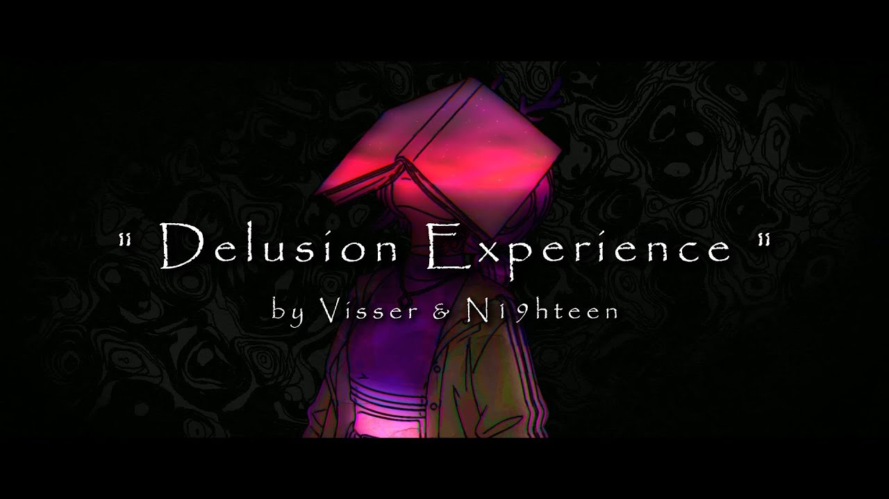
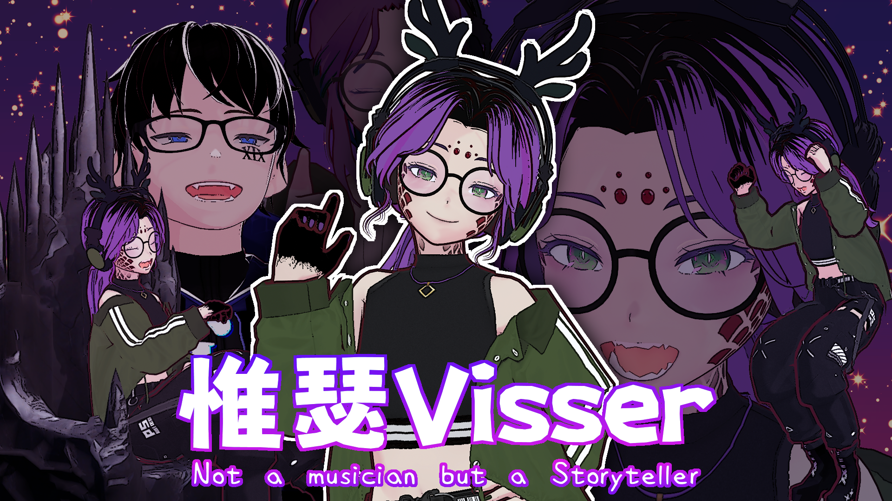

音樂
以電子、流行、實驗與敘事音樂為主，作品經常圍繞焦慮、關係、自我認同與存在感。
WHAT I CREATE
以音樂為中心，延伸到敘事、角色與跨媒介實驗。
以電子、流行、實驗與敘事音樂為主，作品經常圍繞焦慮、關係、自我認同與存在感。
我在意作品中的角色、視角與留白，希望聽者能從作品中找到屬於自己的理解。
將塔羅、AI、遊戲、程式或其他媒介帶進創作，讓作品不只停留在歌曲本身。
PHILOSOPHY
我希望觀眾不是只理解我，而是在作品裡理解自己的想法。
作品對我來說不是單向表達，而是一個等待被不同人完成的空間。我提供一個方向、一個角色或一句話，其餘部分則交給閱聽者。

TIMELINE
2017
從音樂與文字出發，逐漸建立自己的創作方式。
2020
開始累積公開作品，探索不同類型與敘事方向。
2023
將角色設定、視覺形象與音樂創作逐步連結。
2025
重生為奇美拉，容納並創造矛盾與多重媒介。
NOW
繼續製作音樂、故事、角色與各種跨媒介實驗。
GALLERY
角色、封面、創作過程，以及構成惟瑟的不同片段。




